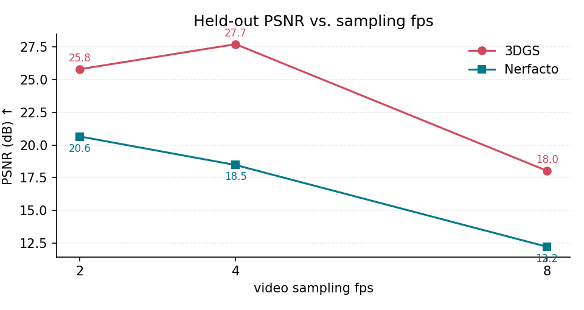
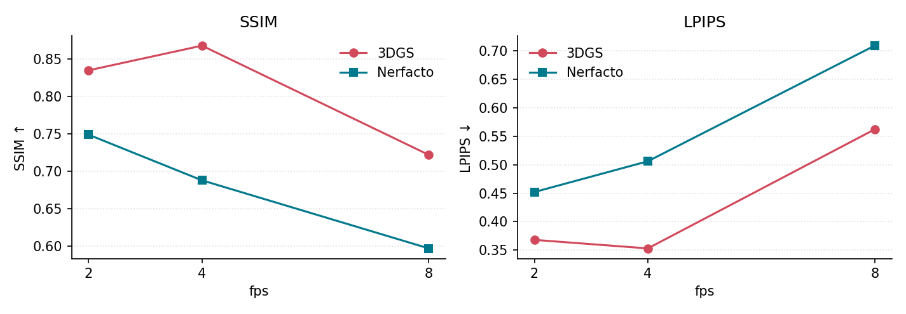
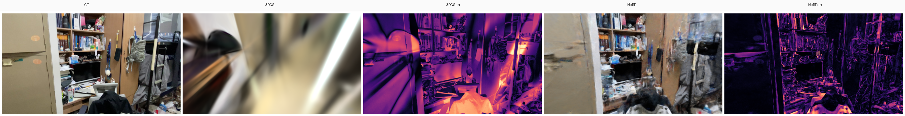
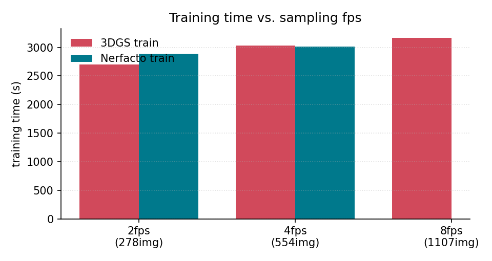
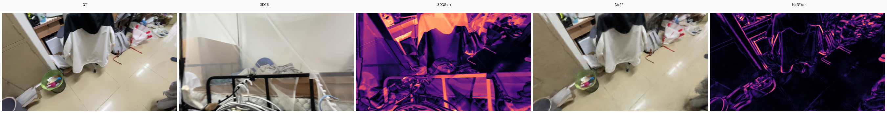
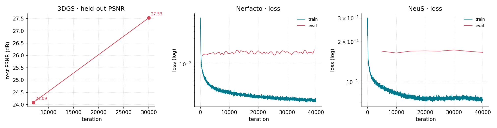

本作业以一段手持拍摄的视频为唯一数据源，对同一真实静态场景（寝室）走完“抽帧→位姿估计→四种表示训练→渲染评测”的完整流程，并在统一的 held-out 测试集与同一组 COLMAP 位姿上比较 COLMAP 点云、3D Gaussian Splatting（3DGS）、Nerfacto 与 NeuS。核心发现有三：其一，3DGS 在新视角合成上始终最优（fps4 上 PSNR 27.70 dB、SSIM 0.868），且训练与渲染效率俱佳；其二，抽帧率对重建质量影响剧烈且非单调，fps8（1107 训练图）反而效果不好，并且视频后段的重建几乎不可读，推测是密集抽帧放大了快速转动区域的运动模糊与匹配漂移；其三，NeuS 训练与表面提取（marching cubes）成功，但由于 nerfstudio 在 held-out 渲染时的 appearance-embedding 维度不匹配，未取得 RGB 指标——本报告定位了该 bug 并给出修复（见 §5.6），其 SDF mesh 仍可作为几何质量证据。
原始数据为一段手持环绕拍摄的寝室视频 dormitory.MOV，并且为了充分采样，拍摄过程中采用了不同的高度。使用 ffmpeg 按固定 fps 等时间间隔抽帧，得到不同密度的图像序列。寝室属于典型的小型室内场景，包含床、书桌、衣柜门、镜子与窗户；其中衣柜门区域带有大面积镜面与高反光，窗户为透光玻璃——这两类区域会在后文反复出现，是解释各方法失败的关键。
抽帧率与图像数量直接决定后续所有环节的输入规模。下表给出三组正式运行的帧数与训练/测试划分（test_ratio=0.1，按文件名每 10 张取 1 张作为 held-out，不参与训练）。三组共享同一套预处理与超参（详见 §4），仅抽帧率不同，构成对“抽帧密度”的单变量对照；表中的帧数为去模糊过滤后的结果。
| fps | 训练图 | 测试图 | 总计 | 分辨率 | run 目录 |
|---|---|---|---|---|---|
| 2 | 278 | 30 | 308 | 900×1600 | 20260620_160035_dormitory_fps2 |
| 4 | 554 | 61 | 615 | 900×1600 | 20260620_200014_dormitory_fps4 |
| 8 | 1107 | 123 | 1230 | 900×1600 | 20260621_110244_dormitory_fps8 |
相机位姿由 COLMAP 顺序匹配（sequential_matcher）+ 增量映射（mapper）估计，单目 PINHOLE 模型，全部帧共享同一相机。管线以 share_poses=true 运行：SfM 用全量图像估计位姿后导出 sparse/0，3DGS / Nerfacto / NeuS 的表示训练则统一只用 train.txt、在同一 test.txt 上评测。这样“位姿估计”与“表示学习”两个变量被解耦，确保四种方法的差异只来自表示本身。
正式运行在抽帧之后开启了两项预处理：一是去模糊过滤，按拉普拉斯方差给出每帧 blur_score，丢弃 blur_threshold=10 以下的模糊帧；二是边缘畸变裁剪 crop_ratio=0.9，保留中心 90% 以缓解手机镜头的边缘畸变。各项方法的训练超参与评测口径统一汇总于 §4，此处不重复。
本作业不为每种表示从零实现训练算法，而是把成熟的公开重建栈统一编排进一条可复现管线，重点在公平对比而非重造轮子。本节只说明每种方法"怎么被调用"，不展开原理（原理与失败模式的讨论见 §6）。
| 用途 | 调用的工具 / 库 | 在本作业中的角色 |
|---|---|---|
| SfM / MVS 位姿与点云 | COLMAP（系统二进制，CUDA） | 特征提取、顺序匹配、增量映射、（可选）dense MVS；产出共享位姿 sparse/0 |
| NeRF / NeuS 训练与渲染 | nerfstudio（nerfacto、neus-facto；CLI ns-process-data/ns-train/ns-render/ns-eval） | Nerfacto 与 NeuS 的训练、held-out 渲染、mesh 导出 |
| 3DGS 训练与渲染 | GraphDeco gaussian-splatting（train.py/render.py，子模块 diff-gaussian-rasterization、simple-knn、fused-ssim） | 3DGS 的可微光栅化训练与测试集渲染 |
| 哈希编码后端 | tiny-cuda-nn | nerfstudio 的底层加速后端 |
| 可选 SfM 特征 | hloc（ALIKED+LightGlue 等）、pycolmap | 弱纹理/重复纹理场景的可替换前端 |
| 几何处理与可视化 | Open3D | Poisson mesh、法向估计、点云/mesh 查看、Chamfer/F-score |
| 指标与出图 | NumPy、Pillow、matplotlib、lpips | 统一 PSNR/SSIM/LPIPS、定性拼图、训练曲线、报告图表 |
| 视频抽帧 | FFmpeg（系统二进制） | 按 fps 等时间间隔抽帧 |
依赖通过 uv 在 pyproject.toml 的 lab3 group 声明（CPU / CUDA 12.4 两套 extra）；安装与版本见 docs/lab3/README.md。
四种方法都通过同一 CLI（lab3 --methods ...）触发，各自调用上表中的工具，产出标准化的中间结果：
feature_extractor → sequential_matcher → mapper（可选 patch_match_stereo + stereo_fusion 做 dense）--methods sfm，--sfm-feature-extractor 可换 hloc 前端sparse/0、稀疏点云；dense 时额外 dense.ply / Poisson meshreconstruction/sfm.pytrain.py 训练 → render.py 渲染测试集--methods 3dgs --dgs-repo ./gaussian-splatting --dgs-iterations 40000point_cloud/iteration_N/point_cloud.ply、测试集渲染reconstruction/dgs.pyns-process-data（COLMAP→transforms.json）→ ns-train nerfacto → ns-render--methods nerf --nerf-iterations 40000reconstruction/nerf.pymeta_data.json → ns-train neus-facto → marching cubes 导出 mesh--methods neus --config configs/lab3/extra.json --neus-iterations 40001sdf_mesh.ply、checkpoint（held-out RGB 渲染受阻于 §5.6 bug）reconstruction/neus.py一次完整调用按下面的阶段顺序执行；其中 share_poses=true 让 SfM 用全量图估计位姿后，把同一份 sparse/0 喂给三种神经表示，从而把"位姿估计"与"表示学习"两个变量解耦。
src/lab3/ 采用四层结构，自上而下为入口、编排、方法适配、共享后处理；方法适配层实现统一接口，新增表示无需改动编排与评测：
共享后处理层保证四种方法在同一份 held-out 集、同一套指标实现（lab3.metrics）与同一分辨率下被评测，是公平对比的基础。
常用命令如下（完整参数见 docs/lab3/README.md）：
# 命令链自检（不实际运行）
uv run --python 3.12 --group lab3 --extra cpu lab3 \
--config configs/lab3/default.json --methods sfm --dry-run
# 正式全流程（寝室，fps4，四种方法）
uv run --python 3.12 --group lab3 --extra cu124 lab3 \
--config configs/lab3/default.json --scene-name dormitory_fps4 --fps 4 \
--methods sfm nerf neus 3dgs --dgs-repo ./gaussian-splatting
# 仅重跑某次运行的评测 / 后处理（不重训）
uv run --python 3.12 --group lab3 --extra cu124 lab3 \
--run-dir outputs/lab3/20260620_200014_dormitory_fps4
# 交互查看已有结果（Open3D 几何 + nerfstudio web viewer）
uv run --python 3.12 --group lab3 --extra cu124 lab3 \
--view-run outputs/lab3/20260620_200014_dormitory_fps4配置入口为 configs/lab3/ 下的 JSON（default.json 主配置、extra.json 额外实验、boya_close.json/boya_far.json 博雅场景）。
scripts/lab3/）run_lab3_fps_sweep.sh、run_lab3_batch_suite.sh：按 fps / 场景批量跑全流程，本文 fps2/4/8 由前者产生。
render_neus_heldout.py：修复并重渲 NeuS 的 held-out RGB/法向/深度（§5.6 的 appearance-embedding 修复）。
build_report_{assets,charts,losscurves}.py：从既有 run 生成定性拼图、点云、定量图与训练曲线（纯 NumPy/PIL/matplotlib）。
build_sibr_viewer.sh 编译 3DGS SIBR 实时查看器；inspect_blur_scores.sh 检查 blur_score 分布以选去模糊阈值。
所有训练与评测均在同一台 Ubuntu 24.04 机器上完成（i7-14700K、32 GB RAM、RTX 4070 Ti SUPER 16 GB）。系统工具 colmap（CUDA）与 ffmpeg 在 PATH 中；神经方法依赖 tiny-cuda-nn、diff-gaussian-rasterization 等本地编译扩展（见 docs/lab3/README.md）。
iterations=40000，分辨率 1600max_num_iterations=40000max_num_iterations=40001，mesh_resolution=512，export_mesh=trueeval_size=[900,1600]test_ratio=0.1，share_poses=true3DGS、Nerfacto 均在规范 held-out 集 prepared/test.txt 上用自实现 lab3.metrics（统一 PSNR/SSIM/LPIPS）评测，口径在 fps2/4/8 间一致。NeuS 受 §5.6 bug 影响、暂无 RGB 指标。
渲染 FPS 的测量口径需特别说明：3DGS 的 render_fps 由 render.py 渲染 held-out 视图的总耗时反算，包含磁盘 I/O，因此数值偏低（0.17 左右）并不代表其推理能力——3DGS 真正的实时性需用 SIBR viewer 单独测量（见附录 TODO）。Nerfacto 的 render_fps 同理（ns-render 含 I/O）。
下表与下图给出 3DGS 与 Nerfacto 在正式运行 fps 2/4/8 下的 held-out 指标。Nerfacto 呈现与 3DGS 相同的非单调趋势。
| fps（训练图） | 3DGS PSNR ↑ | 3DGS SSIM ↑ | 3DGS LPIPS ↓ | Nerfacto PSNR ↑ | Nerfacto SSIM ↑ | Nerfacto LPIPS ↓ |
|---|---|---|---|---|---|---|
| 2（278） | 25.79 | 0.835 | 0.368 | 20.65 | 0.749 | 0.452 |
| 4（554） | 27.70 | 0.868 | 0.353 | 18.47 | 0.688 | 0.506 |
| 8（1107） | 18.03 | 0.722 | 0.562 | 12.23 | 0.597 | 0.709 |


为什么会“帧越多越差”？原因不在表示本身，而在数据采集质量。这段视频在环绕镜面衣柜门时存在快速横向转动，密集抽帧（fps8）会把同一运动模糊片段切成大量彼此高度相似但又彼此错位的帧：相邻帧重叠虽高，但模糊与亚像素错位使 COLMAP 的特征匹配与三角化在转动区出现漂移，位姿误差随之被 3DGS 的 densification 与 Nerfacto 的体场放大。fps2/4 的稀疏采样反而跳过了大量模糊帧、保留了运动较缓的清晰视角，因而位姿更稳、重建更好。
这一推断与拍摄时的现象一致：寝室门（带镜面、转动最快）附近是各 fps 下重建最差的区域；窗户虽为透光玻璃，但位于视频后半段、相机掠过时转动平缓，对重建几乎无影响。换言之，损害重建的是“快速视角变化 + 反光”的组合，而不是玻璃本身。
需要特别说明跨 fps 定性对比的一个陷阱：不同 fps 下同一抽帧序号对应的是不同的原始视频帧（fps4 的第 30 帧约在 7.5 s，fps8 的第 30 帧约在 3.75 s，二者并非同一相机位姿）。因此本报告不对 fps4 与 fps8 做并排同视角拼图——那种拼图会把两个不同位姿误当成同一视角，反而误导。fps8 的退化由上图 1、图 2 的指标严格刻画，其视觉表现则由 fps8 自身 held-out 视角的渲染体现（下图，该帧内部 GT/3DGS/NeRF 配对正确、属同一视角）。

fps4 与 fps2 相比，3DGS 在 fps4 略优，而 Nerfacto 在 fps4 反而比 fps2 差（18.47 vs 20.65）。这与“门附近效果不好”的观察吻合：fps4 比 fps2 多保留了门区域的转动帧，对几何敏感度低的 Nerfacto（用半透明体积“糊”出图像）反而是负担，而对显式高斯的 3DGS 影响较小。效率方面，训练时间随帧数近似线性增长（图 4），fps8 的训练成本最高却换来最差的质量，进一步说明密集抽帧在该场景下是净损失。

以口径最完整的 fps4 为基准，下表汇总四种方法的定量结果。SfM 与 NeuS 不产生 RGB 指标：前者是纯几何方法（无可比的新视角合成），后者因 §5.6 的 bug 未取得渲染结果，但其训练与 mesh 提取均成功。
| 方法 | 表示类别 | PSNR ↑ | SSIM ↑ | LPIPS ↓ | 训练 (s) | 渲染 FPS | 模型 (MB) |
|---|---|---|---|---|---|---|---|
| COLMAP 点云 | 显式几何 | N/A | N/A | N/A | 942.5 (mapper) | N/A | — |
| 3DGS | splatting | 27.70 | 0.868 | 0.353 | 3032.0 | 0.170 * | 1341 |
| Nerfacto | neural radiance field | 18.47 | 0.688 | 0.506 | 3016.2 | 0.700 * | 168 |
| NeuS | 隐式 SDF 表面 | N/A 渲染失败 | N/A | N/A | 3263.1 | — | 169 |
* 渲染 FPS 含磁盘 I/O（见 §4），不代表真实推理速度。
3DGS 在该场景下全面领先 Nerfacto（PSNR 高 9 dB 以上）。值得注意的是 Nerfacto 在 fps4 上表现异常疲软（PSNR 仅 18.47），这与门区域的视角相关外观（镜面反射）密切相关——NeRF 用 view-dependent 颜色“烘焙”反射，在新视角下暴露为重影。NeuS 与 Nerfacto 训练时间相近（约 3260s vs 3016s），但 NeuS 额外做了表面正则与 marching cubes，几何输出更结构化。SfM 的 mapper 用时 942s（未开 dense MVS），仅产出稀疏点云。
定性上，下图给出 fps4 下三个 held-out 视角的 GT / 3DGS / Nerfacto 渲染与误差图（NeuS 无渲染故未入图，其几何见 §5.5）。3DGS 渲染锐利、误差图整体偏暗；Nerfacto 在门与镜面附近误差明显偏高（误差图中的亮区）。

正文仅放 fps8（图 3）与 fps4（图 5）各一张 held-out 对比。每个 fps 各有 3 个 held-out 视角的完整对比图（GT/3DGS/3DGS 误差/Nerfacto/Nerfacto 误差）生成于 report_assets/methods/（fps4、fps8 各 3 张）；几何可旋转查看见 交互式点云。
三种神经表示是否稳定收敛、在何处饱和，可由训练曲线直接判断。下图取自 fps4 正式运行管线导出的逐 step 日志（logs/*_train_loss_curve.csv，无重复训练）。3DGS 的日志逐 step 记录了 held-out PSNR，可直接作为质量曲线；Nerfacto 与 NeuS 的日志只记录损失，故以对数纵轴展示其 train/eval 损失。三条曲线均单调下降并在训练末段趋于平缓，未出现发散或回升，说明在 fps4 的数据规模下各方法的优化过程稳定。其中 3DGS 的 held-out PSNR 在约 30000 步后基本饱和，这意味着对其继续训练的边际收益已很有限（见 §5.4）。

本节考察同一方法在不同训练步数下的表现，用以判断收敛拐点与继续训练的边际收益。需要说明，Nerfacto 在正式运行中只保留最终 checkpoint（未设 save_iterations），无法做迭代对比；因此下文以 3DGS 与 NeuS 为主。
3DGS 在 fps4 保存了 7000、30000、40000 步的高斯点云，且训练日志逐 step 记录了 held-out PSNR，因此迭代效果可直接从曲线量化，无需重新渲染：
| 迭代步数 | 7000 | 30000 | 40000（最终渲染评测） |
|---|---|---|---|
| held-out PSNR (dB) | 24.09 | 27.53 | 27.70 |
PSNR 由 7000 步的 24.09 dB 上升至 30000 步的 27.53 dB，此后增长基本停滞（40000 步的最终渲染评测为 27.70 dB，与在线评测口径略有差异）。这表明 3DGS 在该场景下约 30k 步即已接近收敛，继续训练到 40k 步的边际收益很小。下方为不同迭代步数渲染的定性对比预留位置，需重新渲染 7k/30k 检查点后填入。
python gaussian-splatting/render.py --iteration {7000,30000,40000} 渲染各检查点后填入。NeuS 保存了 2000/5000/10000/20000/40000 步的 checkpoint，但 marching cubes 只在训练末导出了一份 mesh，且受 §5.6 渲染 bug 影响没有逐步 PSNR。要做迭代对比，需对每个 checkpoint 重新提取 mesh 并修复渲染以得到 RGB 指标，此处先预留位置；从 §5.3 的损失曲线可见 NeuS 的损失在 20k 步后已趋于平缓，预计几何同样在 20k–40k 步接近饱和。
neus.py export-mesh 重新提取 mesh 后填入。由于没有 RGB-D 或 LiDAR 真值，几何分析采用“COLMAP 稀疏点云为 proxy + 定性观察”的方式，并诚实承认 proxy 自身在反光处也有孔洞。下方交互式查看器（§5.7）可旋转对比四种表示的几何：3DGS 的高斯云、NeuS 的 SDF mesh 顶点、COLMAP 的 dense 云、Nerfacto 的稀疏 proxy。总体观察：3DGS 与 NeuS 的表面在窗户与墙面处连续、锐利；镜面衣柜门附近所有方法都出现缺失或漂浮结构，这与 §5.1 的失败归因一致；NeuS 的 mesh 相比 3DGS 高斯更“薄”、更接近单一表面，体现了 SDF 的几何先验。
说明：fps4/fps8 的 geometry_metrics.csv 为空，原因是这两次运行关闭了 dense SfM（sfm.dense=false），缺少作为 Chamfer/F-score 参考的 dense proxy，故未计算几何定量指标（已在 TODO 中记录补跑）。
四次 NeuS 运行的 metrics.csv 都把 NeuS 记为 render skipped，这是本作业最需要诚实交代的环节。报错来自 nerfstudio 在 held-out 渲染时加载 checkpoint：
RuntimeError: Error(s) in loading state_dict for NeuSFactoModel:
size mismatch for field.embedding_appearance.embedding.weight:
copying a param with shape torch.Size([554, 32]) from checkpoint,
the shape in current model is torch.Size([61, 32]).这里的 554 与 61 分别是 fps4 的训练图数与测试图数。定位后的根因是：管线为了在 held-out 集上评测 NeuS，会把 nerfstudio 的数据解析器重定向到只含测试图的 processed/test 目录（write_neus_eval_config，src/lab3/reconstruction/neus.py）。NeuSFacto 的 SDF field 在构建时会按“数据解析器看到的图像数”分配一张逐图 appearance-embedding 表；训练时这张表有 554 行并写进了 checkpoint，而渲染时模型只看到 61 张测试图、只分配 61 行，load_state_dict 因此在维度上冲突并中止——即便 strict=False 也无法绕过，因为 PyTorch 对尺寸不匹配是直接抛错而非跳过。需要强调，序列化的 use_appearance_embedding: false 是误导性的：运行时 field 仍会创建该 embedding，所以这个开关并不能阻止冲突。
修复采取与框架无关的策略：在渲染前从 checkpoint 的副本中剥离所有 *embedding_appearance* 张量，这样被剥离的键对加载而言只是“缺失键”（strict=False 容忍），尺寸冲突不复存在；appearance 是次要的视角相关辅助项，丢弃它对以几何为主的 NeuS 渲染影响很小。实现已加入两处：一是管线内置的 patch_checkpoint_for_eval（neus.py，已接入 evaluate()，未来运行会自动修复）；二是独立脚本 scripts/lab3/render_neus_heldout.py，可直接对既有 run 重新渲染 RGB / 法向 / 深度（补上了此前缺失的 NeuS 可视化）。两者都只读写 run 目录、不动虚拟环境。
下方查看器把四种表示的几何统一为点云并降采样到约 8–10 万点，可用鼠标旋转/缩放、用下拉切换。需要联网加载 three.js（CDN）；若离线则显示提示。点云数据以二进制（float32 xyz + uint8 rgb）存放于 report_assets/pointcloud/，由 scripts/lab3/build_report_assets.py 从各 .ply 降采样生成。
提示：3DGS(fps8) 与 3DGS(fps4) 对比可看到 fps8 因位姿漂移产生的漂浮/拉丝高斯；NeuS mesh 顶点呈现更薄的壳状表面；镜面门区域在各表示中都有缺失。
§5 中各方法的定量差距，并非调参的偶然结果，而是由每种表示"存什么、优化什么"决定的。Nerfacto 把场景表示成连续的辐射场，监督信号只有渲染后的图像；它的目标里没有任何一项迫使密度坍缩成薄表面，因此它可以忠实地复现训练视角、却让几何保持弥散——这正是它在镜面门处误差偏高、反射被"烘焙"进视角相关颜色的原因。NeuS 用带符号距离场的零等值面来定义表面，用几何约束换取了可提取的干净 mesh，代价是同一个"单一清晰表面"的假设在成像并非单一不透明表面的地方（镜面、透明）失效，也使它对位姿与超参更敏感。3DGS 介于两者之间：它像点云一样保留一组显式 primitive，又像神经场一样让这些 primitive 可微、并自适应致密化，因此既继承了光栅化的渲染速度与锐利的新视角，又不必像 NeRF 那样沿光线密集采样网络。NeRF 的弥散表面、NeuS 的干净但脆弱的表面、3DGS 锐利但不等于真实表面的高斯——这些行为来自表示本身，而不是某个实现做得比另一个好。
把这些表示放到几个相互冲突的实际维度上看，取舍是一致的。在内存上，Nerfacto 与 NeuS 很紧凑（各约 168 MB），因为场景被编码进网络权重；3DGS 则要存数十万个高斯，在 fps4 上膨胀到约 1.3 GB——显式是要用存储来换的。在渲染速度上，3DGS 把高斯投影并 α-混合，是唯一接近实时的方法，而 NeRF 与 NeuS 必须逐采样点沿光线行进并查询网络，单帧代价显著更高。在几何保真度上顺序反过来：NeuS 给出最接近真实表面的几何，3DGS 的高斯只是对表面的近似，NeRF 的密度场最不具备几何意义。在数据获取上，三者都依赖准确的 COLMAP 位姿，但 NeuS 最脆弱，因为干净的 SDF 无法吸收不一致的观测，而 NeRF 可以用视角相关颜色"糊住"位姿或外观误差——这也是 NeRF 的伪影直到新视角才暴露的原因。在拓扑灵活性上，NeRF 的连续体场与 3DGS 的自由高斯几乎不受约束，代价是不给出干净表面；NeuS 与显式 mesh 则更受限、但也更可编辑。这些维度直接冲突：渲染最快、看起来最锐利的 3DGS，既不是几何最忠实的，也不是最紧凑的；而几何最忠实的 NeuS，恰恰最慢、对数据最敏感。
本场景观察到的具体失败也能在同一条逻辑下解释。Nerfacto 在门与镜面附近的高误差，是它"优化图像而非表面"的直接表现：反射被视角相关颜色吸收，训练视角尚可，新视角即暴露为重影。3DGS 在视角覆盖不足或位姿漂移处（fps8 尤为明显）会出现漂浮高斯与背景泄漏——优化器会在空间中放置半透明高斯去解释训练图，形成肉眼可见的拉丝与雾状结构。NeuS 在镜面门处的 mesh 缺失，则源于单一 SDF 表面无法解释镜面反射成像；这正是它在本场景几何最可信、却 RGB 评测受阻（叠加 §5.6 的实现问题）的根源。换言之，这些失败可以被表示结构解释，而不必诉诸"实现好坏"。
若要把结果用于 AR/VR、校园数字孪生浏览、机器人导航或后续场景编辑这类以”可交互查看”为先的应用，我会选择 3DGS。这一选择出于表示结构而非偶然优势：3DGS 把显式 primitive 与可微、自适应致密化的优化结合在一起，既达到了接近神经场的渲染质量，又避免了 NeRF、NeuS 那种沿光线密集采样带来的慢速渲染；同时显式、可枚举的高斯集合比一团弥散的密度场更易于施加正则与编辑，因此也在一定程度上缓解了纯神经场容易过拟合、训练困难的问题。再叠加它训练快、渲染资源开销低的特点，当交付物是一个可实时查看的场景而非测量级表面时，3DGS 是最实用的折中。在本场景的实证上它也印证了这一点：fps4 上取得最高的 PSNR/SSIM、渲染可实时、几何足够直观，代价仅是模型偏大（约 1.3 GB）。若下游任务确实要求精确表面（mesh 编辑、物理仿真、度量几何），则在修复 §5.6 的渲染流程后 NeuS 的 SDF 表面更可信；但就本场景与上述应用而言，3DGS 是更合适的表示。Nerfacto 在本场景被镜面反射拖累、表现疲软，不宜作为主力；COLMAP 点云则更适合作为位姿与几何 proxy，而非最终交付。
改进方向有三：其一，从数据端入手收益最大——重拍时绕开镜面衣柜门的快速转动、或在转动区放慢、对反光面做 mask，比调任何超参都更能提升 fps8 与门区域质量；其二，为 NeuS/3DGS 引入深度或法向先验、对镜面区做语义 mask，缓解单一表面假设与高斯漂浮；其三，把抽帧策略从”固定 fps”改为”基于运动/模糊的自适应抽帧”，预期在相同帧数下显著优于 fps8。
博雅为额外的室外/物体级补充场景，目前尚未跑完，仅作占位。已完成的部分：20260621_172005_boya_close（13 图，sfm/3dgs/nerf/neus 均已训练，3DGS PSNR 14.52、Nerfacto 13.23，质量偏低，疑似视角覆盖严重不足）；20260621_192805_boya_far 仅完成 sfm+3dgs，缺 nerf/neus/评测。完整结果待补后，将在此补充与寝室的跨场景对比。
render_neus_heldout.py，补齐 NeuS 的 PSNR/SSIM/LPIPS 与定性渲染列，并刷新 metrics.csv 与对比图。sfm.dense=true 跑 dense MVS，提供 Chamfer/F-score 的几何 proxy，填上空的 geometry_metrics.csv。render_fps 含磁盘 I/O，偏低，不代表实时能力）。render.py 重渲 fps2 的完整测试集后再生成面板。render.py --iteration），填入图 7 的迭代定性对比；表已用在线 PSNR 量化（24.09→27.53 dB）。export-mesh 并修复渲染，填入图 8 的迭代几何对比与逐步 PSNR。uv pip freeze 与相机轨迹截图（COLMAP model_converter 导出）。报告由 docs/lab3/report.html 渲染；图表与点云由 scripts/lab3/build_report_{assets,charts}.py 生成。所有运行结果图像均位于 docs/lab3/report_assets/。